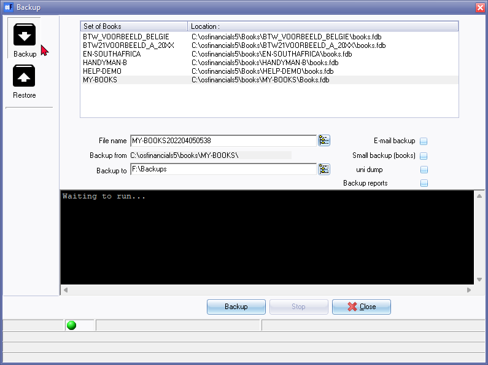

Backup a Set of Books
The Backup / Restore feature allows you to create a backup of your data in a Set of Books onto a disk or hard drive, or other selected location, in a compressed tcBackup.zip file. There are two (2) options for creating a backup file:
- Normal backup, which includes all files in the Set of Books folder (including images and PDFs),
- Small backup (books), which only includes the database file (e.g. books.fdb) and excludes all other files.
Backup files are created to restore a Set of Books to the exact state it was in when the backup file was created. Backups are essentially copies of your data that you create on a regular basis to ensure that you have a recent version of your data in case of any issues or errors.
As a general rule, it's a good practice to back up your data often, preferably upon closing the program. While backing up to your hard disk is also a good practice, it's best to store your backups on a different device than your computer to protect against data loss in case of a hard drive failure or a system failure.
|
|
You will need backups:
|

It's also a good practice to complete a backup in the following instances:
- Prior to performing any major processes, such as Delete Set of Books on the Start ribbon or performing global processes like (Clear/Reset or Do year end., Reverse posted batches / documents) on the Setup ribbon.
- Old data on your previous version of osFinancials or other accounting package prior to conversion to osFinancials.
- Import data from exported files - If errors or inconsistencies occur after importing data from an exported file, you may need to restore the Set of Books.
- Depending on your volume of work, it's recommended to create backups. The following is recommended:
- 2 - 3 sets daily re-used weekly or every 3rd to 4th day.
- 2 weekly sets - re-used every 3rd week.
- 12 Monthly sets - done at the end of each month, and re-used each year.
- 1 set prior to and after year-end that is kept permanently.
To restore your data, you'll need the same backup disks or backup files on your hard drive. Without regular backups, you may have to re-enter thousands of transactions and other important information.
To create a Backup file:
- On the Start ribbon, select Backup / Restore. If a Set of Books is open on your system, osFinancials will automatically close the Set of Books and the "Backup Set of Books" screen is displayed:

- Select the Backup option, if not already selected.
|
|
If no Set of Books are opened, the Restore button is automatically selected. If a Set of Books are opened, the Backup button is automatically selected. |

- Select the Name of the Set of Books you wish to Backup.
- You may over type the Backup file name with a name of your own.
|
|
The date and time of your operating system is automatically inserted in the file name (e.g. MY-BOOKS202204050538) after the default file name. (In this example, the date and time format is YYYYMMDD followed by the Hour and Minutes). The format may differ if your operating system's short date style or format is set different). |

- Select the folder (drive, etc.) to Backup to.
- If you need to create a small backup, tick the "Small backup (books)" option.
|
|
If you wish to e-mail the backup, you may select the "Small backup (books)" option to create a backup of your Set of Books database in a single file only (e.g. books.fdb - for the firebird database). If this option is selected, no images or other files linked to your Set of Books will not be included in your backup. This will reduce the size of your backup file. |
- Click on the Backup button to start the backup process. While the Backup process is running, the files are backed up from and added on your backup disk or location on your hard drive or network drive will be displayed. When the backup process is completed, an information screen will be displayed.
The Backup process is completed!
The information in the Backup process will be displayed, for example:
Starting backup...
100%
12 Files compressed
Backup completed...
- Click on the OK button and click on the Close button on the "Backup Set of Books" screen. You may also press the Esc key on your keyboard.